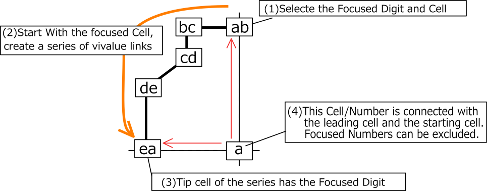
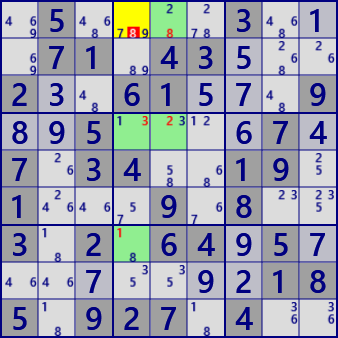
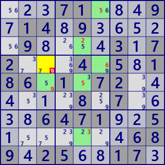

XY Chain
XY-Chain is an analysis algorithm using Locked which occurs in the concatenation of bivalues. The following figure shows the image of XY-Chain. Begin with bivalue's cell with a focused number a and concatenate bivalue cells. In the image diagram, they are connected with different numbers, but the same number may appear. It is assumed that a cell at the tip of a chain has the same number a as the starting cell. Candidate number a can be excluded in the cell related to the starting cell / leading cell.

XY-Chain sample. Two series are overlapped in the right figure.
 XY Chain r1c4 #8 is false> r7c4-r4c4-r4c5-r1c5

XY Chain r4c3 #9 is false
> r4c6-r1c6-r3c5-r8c5-r5c5-r5c3
.5....3...71.43...2..61...9..5....7.7.34..19.1...9.8..3.2.64.5........185.927.4..
...71...9.14.9.....9....3.72...4.5.186.1.72......8.7....6471..5.......689.25..17.